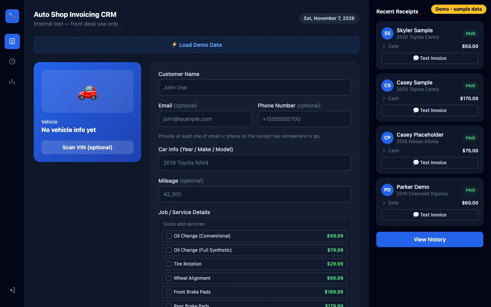

The shop was paying for subscription shop-management software. The owner wanted a tool the shop owns: quick receipts at the front desk, a record of every job, an easy way to get invoices to customers, and no monthly fee.
Customer names, phone numbers, and vehicles are private, so the app had to stay locked to staff while still letting a customer open their own invoice.
What I built
VIN scanning: staff scan the VIN barcode with the device camera (ZXing), and the app fills in the vehicle details from the NHTSA vehicle database.
Receipts: customer, vehicle, mileage, services, and payment in one form, emailed automatically through Resend.
Text Invoice: builds a message with a secure link and hands it to the phone’s share sheet, so the employee sends it from Messages.
History and lookup: every receipt is saved to a Google Sheet through SheetDB and can be searched by customer name, car, or VIN.
Dashboard: D3.js charts for revenue, average ticket, payment methods, and service mix.
Key engineering decisions
Invoice links that need no database
Each public link is /invoice/{token}, where the token is the invoice reference encrypted with AES-256-GCM using a server-only secret. The token reveals no ID, name, or phone number, the same invoice always gets the same link, and nothing extra has to be stored. Trade-off: one link can’t be revoked by itself; rotating the secret invalidates all of them. I documented that in the README.
Texting without an SMS provider
Instead of paying for a texting service, the app opens the phone’s native share sheet with the message and link ready. The employee reviews it and presses Send from their own phone. Because the app can’t know whether it was sent, it never marks an invoice as “Sent” automatically.
Two layers of login protection
Middleware sends every request without a valid session to the login page. Every server action and data page also checks the session, because Next.js server actions can be called directly. Passwords are hashed with scrypt and compared in constant time; sessions are HMAC-SHA256 signed, HttpOnly cookies that expire after 12 hours. If a secret is missing, nobody can log in.
A public demo that can’t touch real data
The demo is a separate deployment of the same code with fake customers (555-01xx numbers, example.com emails). It refuses to start if the real sheet’s URL is configured, emails are simulated, and new invoices live only in that visitor’s session.
Keeping customer details off public pages
The public invoice page shows only what the emailed receipt already shows. It never displays the customer’s email or phone number, and it tells search engines not to index it.
Screens

Receipt form with VIN scan and Text Invoice (demo data)
Testing and shipping
Vitest unit tests for password hashing, signed sessions, invoice tokens, and which routes are public.
GitHub Actions runs lint and the tests on every push and pull request.
Security headers block framing and turn off every browser permission except the camera, which the VIN scanner needs.
What I’d improve next
Move login rate limiting to a shared store. Today it’s held in memory per server instance, which slows guessing but isn’t a hard limit, and the README says so.
Add per-invoice link revocation with a small amount of storage.
Next.js
React
JavaScript
Tailwind
D3.js
SheetDB
Resend
Vitest
GitHub Actions
Next: POS Invoice Manager
Point-of-sale and invoicing app built for Buffet Lucia’s Fiesta Mexicana, a Bronx catering business, and available to other small businesses.